The servicing module is a pared down version of the installation module with a number of added features to enable the efficient and cost-effective servicing of customer equipment.
Features include:
Batch assigning service requests to the calendars of service personnel
Easily batch schedule services by geographic region or by product group
Self-service customer portal (full self-service or part self-service)
Outstanding servicing requests are listed here.
Click the button above the list and choose desired date range, regions and product categories to filter by.
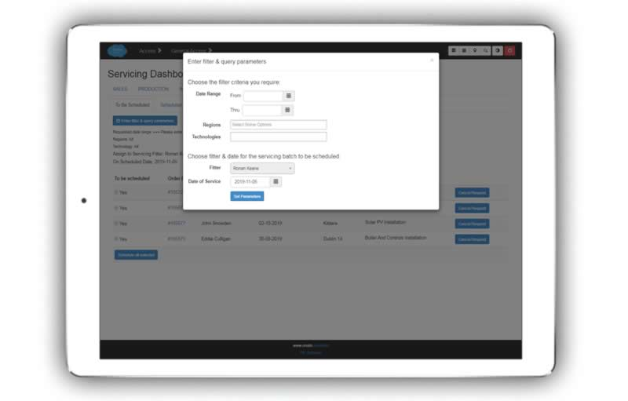In the lower part of the dialogue box above, choose the desired service-fitter from the drop-down list, and the date the assigned services are to be carried out.
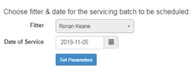First, filter the list if desired. Then, place a tick in front of each service you want to assign to the servicing fitter on the specified date.
Click the ‘Schedule All Selected’ button which will pop up a confirmation dialogue that you click OK to confirm this is what you want to do.
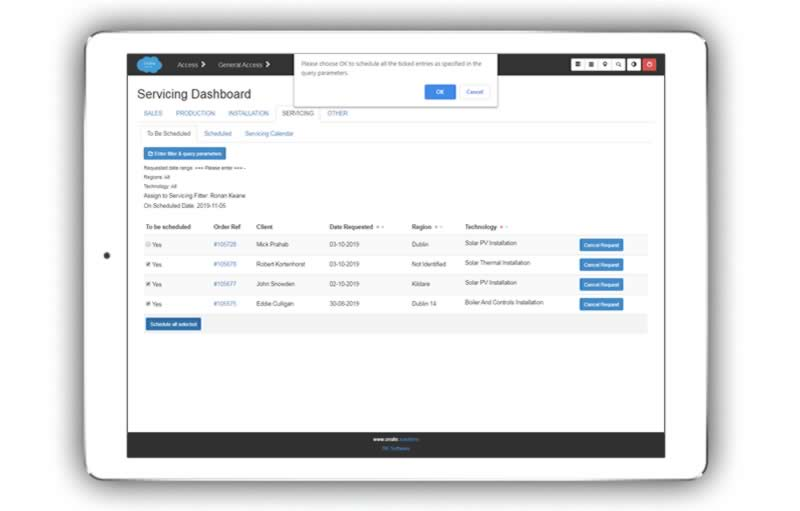Note
Click through to view greater detail about a scheduled service, or to make updates to it.
If for some reason you need to cancel a requested service, just click the ‘Cancel Request’ button to the right of the entry.
Scheduled services are listed on this screen.
Note that you can filter the list of scheduled services by date and region.
You may set a scheduled time for the service that will show up on the service fitters personal calendar.
Click the clock icon on the time entry, choose the time, and click the update button.
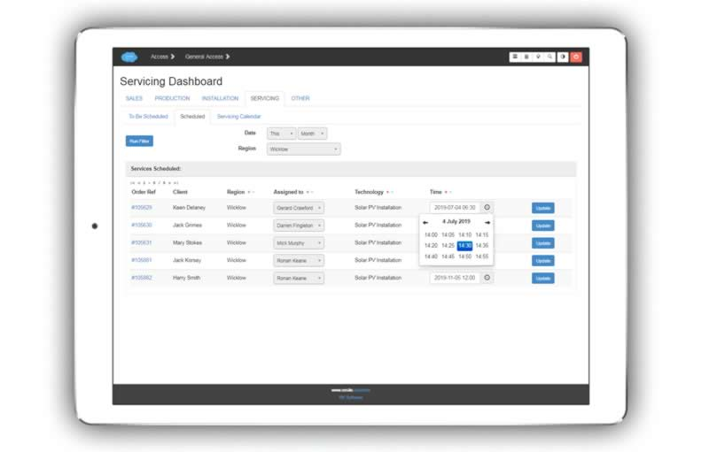Similarly, click the dropdown to choose the assigned fitter and then click the update button.
A calendar view of all scheduled services quickly shows you what is scheduled for the week, or you may easily change the view to see the whole month.
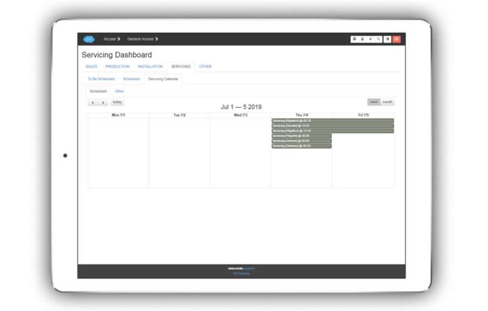Note
Calendar entries are colour coded and interactive - you can click through direct to the order details, or hover over the calendar bar for a tool-tip with more information about address, client, project manager etc.
The interface is optimised for phone view, but may easily be viewed on tablet or desktop as well.
Servicing requested on installations done by your own company.
Enter in the contact email address for that client to bring up a list of the installations that have been done for them.
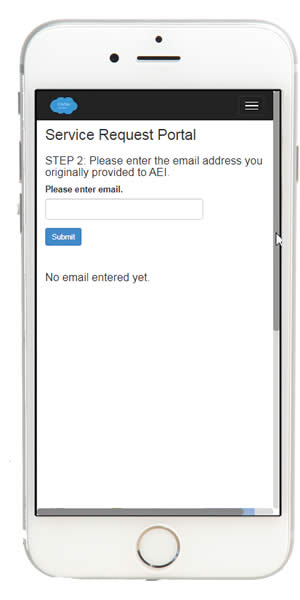Then choose from the list the installation that requires servicing and click the submit button. (This will create a blank service order that can be viewed by the office personnel).
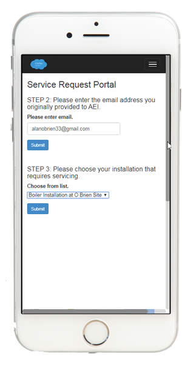If this is a client that requires servicing on an installation done by another company, that can be easily accomodated as well.
In this example we use an Irish Eircode to automatically search the address. This can be extended for other countries.
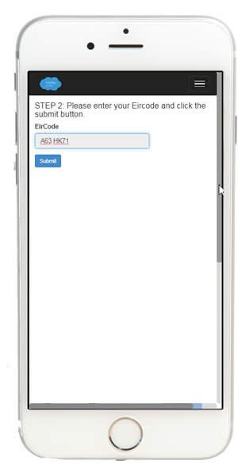Once the address is brought up, the service type is specified from a drop-down list, and contact details entered.
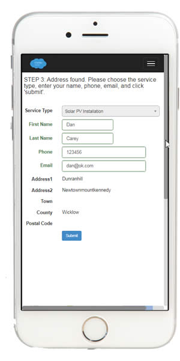Whether the original install was done by your own company or another, these screens are fairly similar for both.
Note
When the service order is created, the client receives a link to the following screens, that incorporate login credentials so that they do not have to go through login screens to see their information.
The address can be updated by clicking the button.
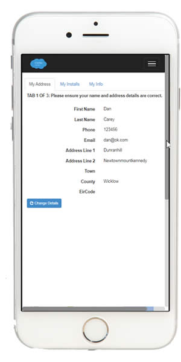This tab lists critical questions about the install and why it needs servicing. These are tailored questions for each type of service.
Age
Whether it has been working well
Symptoms of problem (s)
Other information
Again, dependent on the type of service, a list of photos that are required by the service fitter are provided for the customer to upload, following a very simple process.
Also relevant notes may be added here.
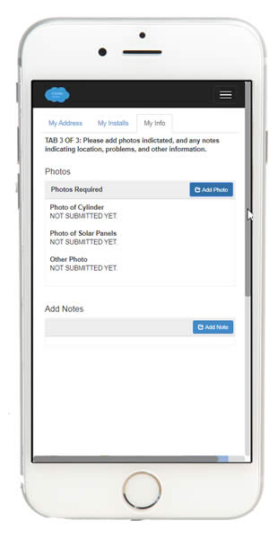Automatic emails can be generated by the system.
Initial email confirming service request and providing link to their service information screen
Update emails when their service has been scheduled (or re-scheduled)
This service order view for an office user is similar to the installation order view, but simplified and dedicated to the requirements of carrying out servicing.
Note
Click through a service order reference to view and edit all details about the service order.
Basic information about the order
Client address
Site address (if different)
Map of site location
Order Information, key dates, PO number, if any
Notes
First tab of Order Detail. (Similar to the task view in an installation order).
Status
Scheduled date
Duration
Personnel assigned may be viewed and updated
Information can be entered directly here in addition to information pulled in from the ‘self-service’ portal.
Original components installed (and notes)
Photos of equipment for servicing (as requested through the self-service portal, or added directly here)
Servicing issues (as per questionnaire tailored to service type answered through the self-service portal)
Original Installation Survey Information
Notes on the problem
Note
This screen provides all background information needed for the service fitter to carry out maintenance quickly and effectively.
Note
This screen will differ slightly dependent on whether the equipment to be serviced was originally installed by your company or not.
Any inspection or commissioning inspection carried out by the service-fitter on the equipment is viewable on this screen.
The service fittter clicks through the task on their personal calendar to view the screens below.
Basic client information, contact details, and location
One touch phone
Google directions
Any commissioning information required post-servicing, or quality checks etc.
Photo upload included
All details viewable on the office user’s “Problem Information” tab shown above is also available to the service fitter on his phone.
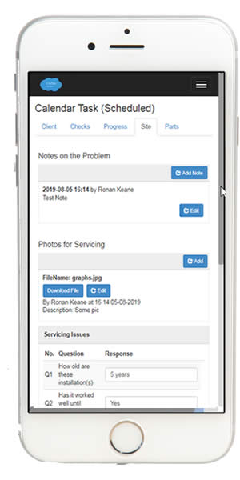